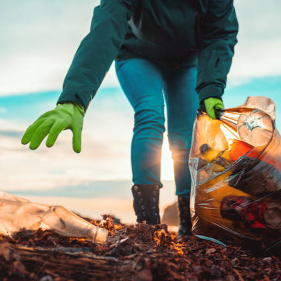
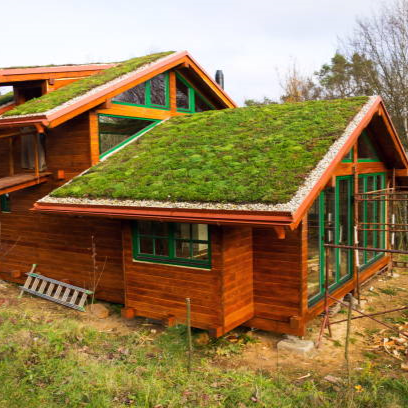

|
Reciclagem
|
 |
|
Fazer a separação correta dos lixos consumidos é essencial, pois muitos resíduos que não são biodegradáveis demoram muito para se decomporem.
Mas alguns materiais (como o plástico) são reutilizáveis, e ao descartar corretamente, muitas empresas conseguem utilizar a embalagem “velha”
para criar novas ou adotarem maneiras para estimular a reciclagem.
A Coca-Cola por exemplo, utiliza as “garrafas retornáveis”, a Toddynho substituiu canudos de plástico por canudos de papel. Também é possível utilizar
esses materiais para decoração, por meio de artesanatos. Inclusive, muitos artistas se destacam nos dias de hoje por fazerem “arte com lixo”.
|
|
Coleta seletiva |
 |
|
A compostagem orgânica é um processo em que os restos de comida são
transformados em adubo, assim, sendo benéficos para o meio
ambiente, pois ele ajuda no processo de recuperação/fertilização do solo,
além de contribuir para a redução do aquecimento global. Assim,
reforçando a importância da coleta seletiva, pois de certa forma, ela
ajuda a prevenir doenças e também a direcionar corretamente o local
dos resíduos orgânicos ou inorgânicos, e ao ser feita corretamente,
pode inclusive acabar com as contaminações tóxicas causadas em
aterros sanitários.
|
|
Abordagens recentes |
 |
Telhado Verde: É uma maneira recente que ajuda na preservação da flora e no consumo sustentável de água/energia. O telhado verde é uma vegetação
instalada na laje de um edifício, em que quando chove, a água da chuva rega as plantas no telhado, e o excesso de água pode ser armazenado por
meio de canos para a limpeza da casa, uso em descargas, ou até mesmo tornar-se potável com o tratamento correto. Ele ainda reduz 5 graus da
temperatura do edifício e ajuda a diminuir ondas de calor nas cidades (isso acontece apenas se um grande número de residências utilizarem o telhado verde).
ODS 12: A ODS é a abreviação de “Objetivo de Desenvolvimento Sustentável”, e foram criadas pela ONU em que o objetivo 12, busca incentivar a
produção e consumo sustentável.
|
Bibliografia |
|
|